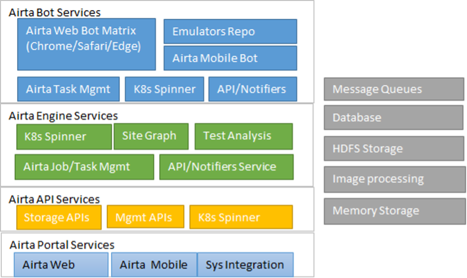
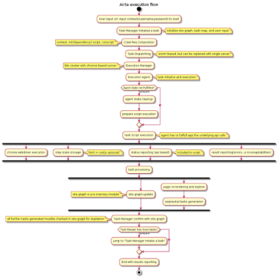
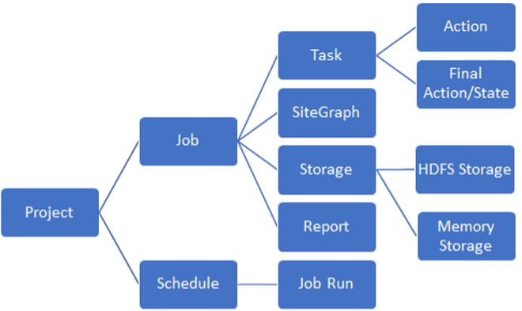

Design Architecture

Airta platform mainly include 4 major services, Airta Bot Service, Airta Engine, Airta Portal, and Airta API Service, and each service will provide a k8s spinner to auto-scale (based on server capacity load factor).
Domain Object Model
From customer’s perspective, a complete user scenario that only involved Airta Platform can be described as below
1. User login into Airta Portal, define a Project, which include all necessary attributes to tell the system how the project works, include
a. Access entries
b. Input libraries (username, password, logical input components, match and input components)
c. Project execution schedule
d. CI/CD configurations (optional)
2. User schedule a run to validate this project, this will initiate a Airta Job run, accepted by Airta Engine (this is where we start to process)
3. Airta Engine will initiate a internal Job (inherited from Project), and compose necessary initial tasks, which include below
a. Initiate Job configuration, airta bot scaling paramters (decide scale up/down threshold)
b. Initiate Job (persisted object, storage container id, memory storage)
c. Initiate Project Site Graph (memory storage and local cache)
d. Initiate Task Queues (Event based, or API based)
e. For ready task, analyze the input, prepare the task to run
4. Task Execution on Airta Bot Service
a. Airta Engine will call Bot service API to dispatch tasks (with condition)
b. Bot service accept the task, start to run the task on agent instance (web or mobile) with nanoscript execution
c. Script execution include storage, page analysis, and validations, and report back the task Note, bot service don’t necessarily contact with engine service, but nanoscript may include reporting apis , so agent service need to implement all standard API, regardless it’s developed in nodejs, java, or other languages, it will need to deal with message queue, storage, and API to get those requirement done
5. Airta Engine receive the task finish status, start to fetch task detailed data for analysis, steps as below
a. For each step, track the results, possible failures, if it’s critical, put into project report
b. Load the site graph if not, check final page state, if it’s already duplicated, task will end
c. Otherwise for final page state, analyze the page, and compose possible navigation and actions, compose additional tasks, and put it into task queue
d. Update sitegraph, update job storage
e. Repeat interaction with airta bot service (task queue currently designed as Database stored, it will be fetched and dispatched in orders
f. Once all tasks are dispatched (note there may be tasks abandoned, canceled due to duplication), job will be mark as completed , and final job report will be composed (mainly pull data from site graph (memory storage), and image processing results put into HDFS and stored related info in DB)
g. Clean up the job context, storage (except HDFS), etc 
Business Object Model
User Project
User project is only object that user create, it include all key data that airta platform need to peroform the key component project include is input library (which designed as below
Input Library, the format defined as below
Access entry: user can specified 1-multiple entry to access system, which will be triggered as multiple tasks for system to begin.
For page element input, it will include
1. Fuzzy match expression to tell system for a given input element, if it can be used to generate input
e.g. Username|用户名|user**, such a expression will tell system, if a element surrounded text match username or match 用户名, or starts with user, then we can use this input item to generate input
2. Value, value could be const value, expression for dynamic generation
3. Scope, scope will limit the usage for this input, e.g. url in [/login]. Means it will only applied to a page with url as /login
So the input library will only be composed after page state is returned for further analyze, which make sense, for any system, first interaction won’t be input , instead it should be render UI from system
Job
A job is a instance from project, it’s based on project schedule or user manually kick off, a job will be performed by airta engine, from a project access entry, iterate all possible path till there is no new navigation in given scope, or no more actions can be performed on those navigated pages
In order to do that, it will trigged multiple tasks
Task
A task is a implemented action, from certain job, which represented a serial operations on web page, or mobile app, the task’s purpose is to carry out the exploring commands, track all elements it find, and report the final state to Airta engine, a task is the single action that dispatchable to airta bot service
Note: a task may not be generated by a job, airta engine may use a orphan task to perform some system actions or status check for bot service
A task is implemented in nanoscript (which explained in latter sections)
Site Graph
A site graph is a centralized navigation repo for any job , the purpose for a site graph is to
1. Track history of actions for a given job
2. Generate visit path for any connected page links (e.g. from home page to specific feature page)
3. Optimize the navigation performance, use shorted path to reduce the browser/mobile app navigation steps, and increase the airta testing performance, reduce iteration time
4. Tree/graph to tree/graph comparison, to find out potential changes, and user study on user experience, etc
So the site graph is critical to have, even we can use a short site map list to replace it, but the optimization and performance improvement is the key to airta
Sitegraph will be stored in each engine instance for each project (it’s not consuming large memory chunks)
For persistency and scalability, sitegraph will also be compressed and stored in centralized memory storage (redis?)
Task Dispatching
Task dispatching is the major topic, normally it would consider the below factors in airta platform
normally this dispatching won’t be a performance issue, so mainly focused on the below items
1. conditional/context aware dispatching
e.g. some task may only suitable for agent bot that has more memory, or it’s targeting specific node
2. reliable, repeatable, which means task dispatch should always get executed if success, and dispatch result should get reported as soon as possible
repeatable means task execution failure can be repeated on any node (given fact that condition if may have, and it may not fit into current node) , so the repeating can not be just offline retry
3. async reporting and multiple source reporting
reporting is always aynsc mode for most task dispatching system, but multiple source reporting is also something airta platform need to solve, it simply means a ondemand event notification system, currently it was leveraing nanoscrpt to do that, which might need to enhance, since task failure may cause no event delivered.
4. Redundant event filtering, as retry or repeating happens in system, no matter if it’s event event based or api based, there will be duplicated events (callbacks), for now we use ID and simple overwritten to solve this issue which means event with same job id, taskid, or step id, will always overwrite previous ones
So based on those requirement, API based or Message Queue based both have pros and cons
.
Service Integration
Airta platform provide dual way service integration with customer existing CI/CD or bug tracking systems if possible Airta Update Agent If customer IT system is behind the firewall, not accessible via internet, airta update agent is there to handle this, it will communicate via standard oauth sec and syncing with airta platform, as well as internal CI/CD platform, customer just need to configure those internal project specs at airta portal, airta update agent will hook up the internal system events, with airta platform, trigger runs, update to internal systems, or do reverse way, kick off the internal CI/CD dependent release/build process once airta provide positive feedbacks. Airta Integration Service This is part of the API service, it provide callback over internet, interact with customer’s system, data encrypted and secure, provide dual way integration as well.
Who are you guys?
-

Jane Anderson
Varius nibh. Suspendisse vitae magna eget et amet mollis justo facilisis amet quis.
-

James Doe
Vitae magna eget odio amet mollis justo facilisis amet quis. Sed sagittis consequat.